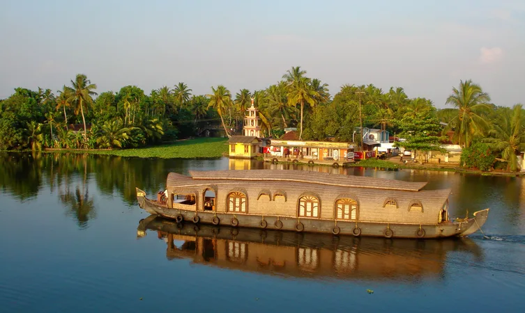
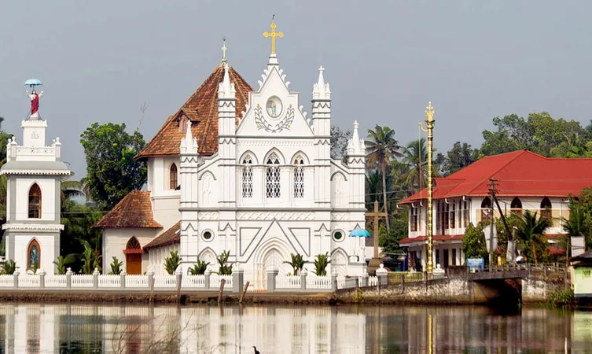
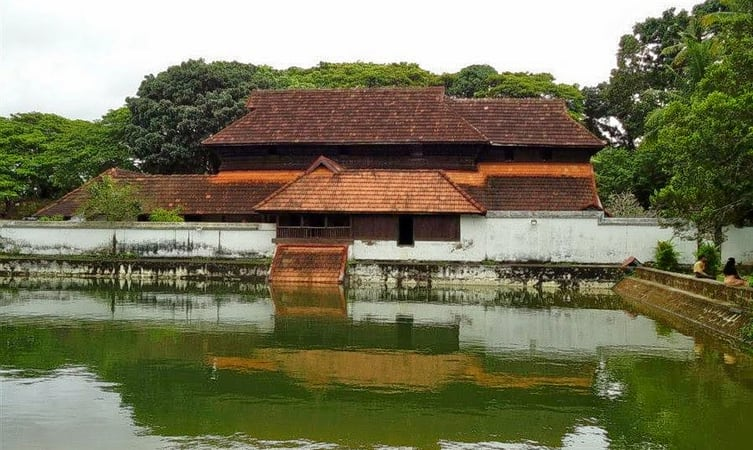

Kuttanad Backwaters

One of the best places to visit in Alleppey is Kuttanad Backwaters. This isn’t a place, it’s a phenomenon. It is a spectacular lagoon, surrounded by the beauty of lakes, rivers, canals, misty mountains and ethereal landscapes.
The experience of floating along the pristine backwaters on a houseboat is inexplicable. You will have to live it to know it! The place is also known as the ‘Rice bowl of Kerala,’ for its stunning rice plantations.
If you are in Alleppey for a day, then this place should be your entire itinerary.
St. Mary's Forane Church

This beautiful church traces its existence back to 835 AD and is known for its events, Friday Liturgy and educational institutions. Currently, the church is a world-renowned center of pilgrimage, where one can know more about the culture and lifestyle of the Christians.
The other feast celebrated here is St. Sebastian’s Feast. Fireworks and other dazzling display of colors make this feast remarkable, interesting and fun. The gorgeous decorations, feast and regal look of the church make it one of the best places to visit in Alleppey.
Krishnapuram Palace

It is one of the most popular museums in Alleppey. Built-in the 18th century by the king of Travancore, Anizham Thirunal Marthanda Varma, Krishnapuram Palace is quite popular for its vintage architecture and artistic murals.
Currently maintained by the Archaeological Department of Kerala, the palace is also home to the biggest mural painting of Kerala-- the 'Gajendra Moksha.’ The enriching mural painting covers an area of about 53 km, making this palace one of the most popular places to visit in Alleppey.